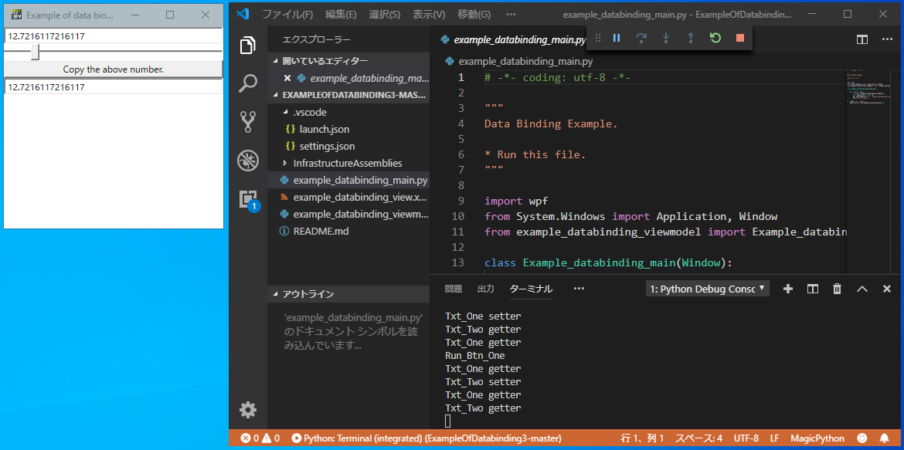

IronPythonスクリプト上で、WPF + XAML + MVVMパターンの更に続きです。
前回は、INotifyPropertyChangedインターフェースとICommandインターフェースを実装したクラスをC#のライブラリで作成しました。
世の中には便利なMVVM(Model/View/ViewModel)パターン用インフラストラクチャがいくつもあります。
Prism、MVVM Light Toolkit、Livetなど。
今回はLivetを試してみようと思います。
Livetは、 尾上 雅則さんが作られた和製のインフラストラクチャーです。私は、XAMLファイルに記載されたコメントが気に入って使い始めました。
<!--Viewに特別な要件が存在しない限りは、トリガーやアクションの自作にこだわらず積極的にコードビハインドを使いましょう -->MVVMについてインターネットで調べると、コードビハインドを使っては絶対ダメぐらいの趣旨のページを度々見かけました。しかも結構難しくてプレッシャーでしたが、このコメントで気が少し軽くなりました。
Livetのメンテナーは現在、かずきさんです。かずきさんはC#、WPF、MVVMなどの記事を多数書いている方です。かずきさんのWPF入門には大変お世話になりました。
本記事はVisual Studio 2022で試した記事です。
Visual Studio 2015と2017の古い記事は、こちらです。
サンプルプログラムの実行までの手順
こちらにサンプルプログラムを置きました。[Code] -> [Download ZIP]からzipファイルをダウンロードしてください。
Livet.dllの準備ができていない場合はここから始めます。
- こちらにアクセスして、Livetをインストールします。
- Visual Studioを起動します。
- ファイル ⇒ 新規作成 ⇒ プロジェクト ⇒ Livetのプロジェクトを選択します。
- ソリューションフォルダの中に、Livet.dllとMicrosoft.Expression.Interactions.dllとSystem.Windows.Interactivity.dll があります。
Livet.dllの準備ができている場合はここから始めます。
- サンプルプログラムのフォルダに、「InfrastructureAssemblies」フォルダを作成し、Livet.dllとMicrosoft.Expression.Interactions.dllとSystem.Windows.Interactivity.dllをコピーして下さい。
- スクリプトを実行します。スクリプトの実行方法は、「IronPythonのスクリプトをVisual Studio Codeで実行する方法」を読んでください。
.vscode\settings.jsonのpythonPathを適切に設定することを忘れないでください。
正常に動作すると以下のようになります。

ポイント
必要な記述
Livetを使うにあたり、XAMLファイルには、
xmlns:l="http://schemas.livet-mvvm.net/2011/wpf"を追加します。
また、ViewModelファイルには、
import clr
import os.path as path
from sys import path as systemPath
systemPath.append(path.join(path.dirname(__file__), "InfrastructureAssemblies"))
clr.AddReferenceToFile("Livet.dll")を追加します。dllのパスを通すことがポイントです。
ひとこと
簡単にバインディングができてしまいました。
ちょっとボタンがほしい。GUIで結果を表示したい。スライダーで手軽にデバッグしたい。なんて時に威力を発揮しそうです。
しかし、
複雑なGUIをIronPythonのスクリプトで作ることには、今のところ疑問を感じます。
Visual Studio 2022とIronPython3.4.1の組合せだと、うまくいってません。。。（2024年1月）